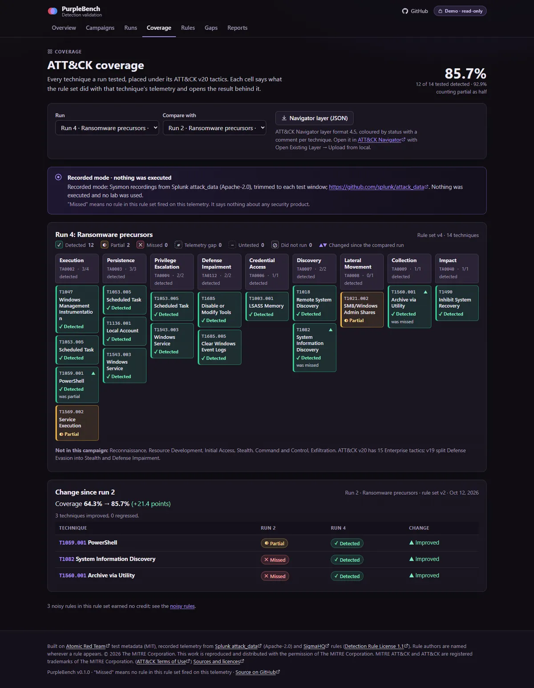
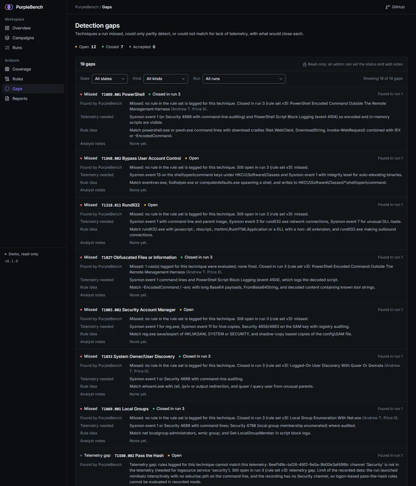
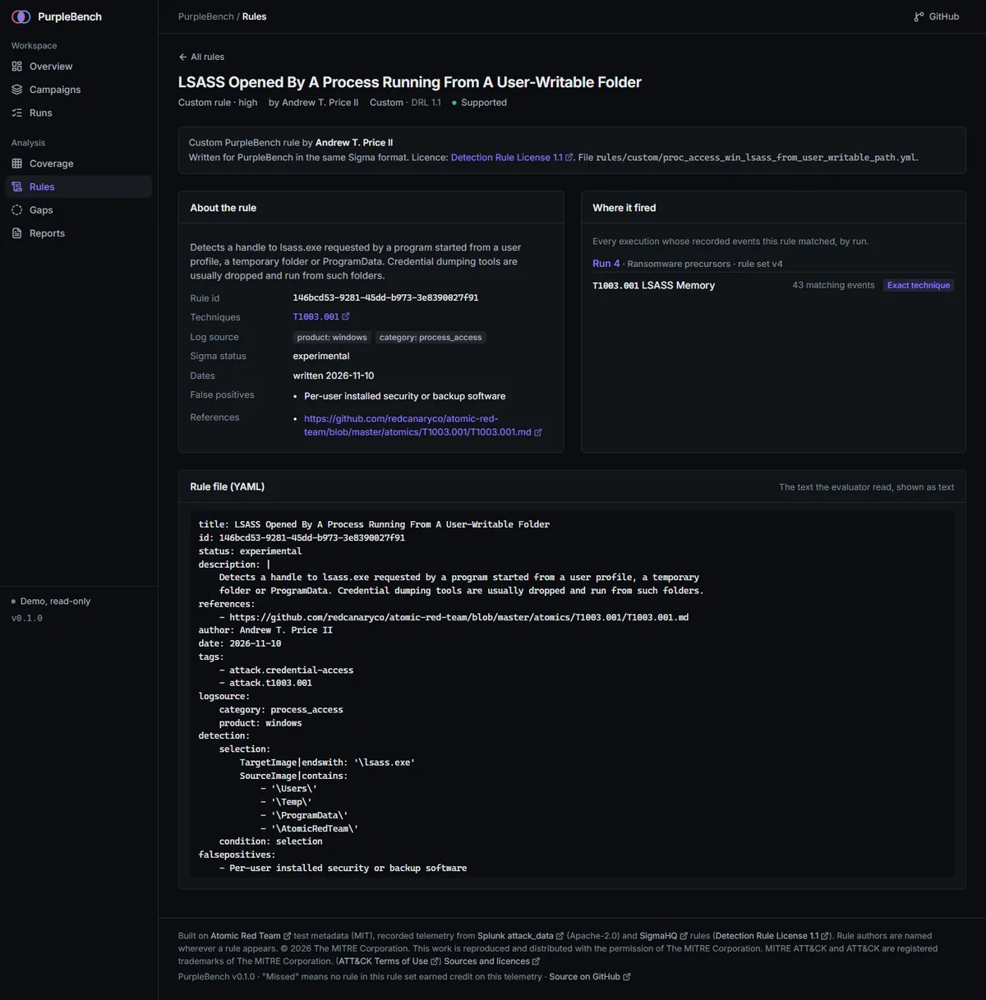

PurpleBench
Summary
PurpleBench is purple-team detection validation for Windows. It takes a list of MITRE ATT&CK techniques, replays recorded Sysmon telemetry for each one against a set of Sigma rules using its own evaluator, and reports per technique whether a rule fired, with the rule's author shown beside every match. The result is a measured coverage number for this rule set on this telemetry, a list of gaps with the telemetry and rule idea that would close each one, and exports: HTML and Markdown reports and an ATT&CK Navigator layer. The rule set is 58 rules from SigmaHQ plus 12 custom rules I wrote.
Everything in the demo is recorded mode. No command is executed and no lab is used. The telemetry is Windows Sysmon events that other people recorded when they ran Atomic Red Team tests (Splunk attack_data), and "missed" means no rule in the set fired on that recording. It says nothing about any product or about your environment.
Problem
Detection rules are easy to collect and hard to trust. Having a rule is not the same as seeing the behavior it is meant to catch: a rule can depend on a field the telemetry does not have, fire on benign activity, or never match a real run of the technique. The only way to know is to run the behavior, or replay a recording of it, and look at what fires.
I wanted the small, honest version of that check: name the rule set, name the telemetry, say what fired, and keep a list of what did not, with the rule idea that would close each gap. It also had to keep "the rule cannot see this telemetry" apart from "the rule failed".
What I built
- A Sigma evaluator. Written from the Sigma Rules Specification 2.1.0 rather than wrapping pySigma. It supports maps and lists,
contains,startswith,endswith,all,windash,re, wildcards and the usual condition logic over Windows process creation, registry, file, network, process access, PowerShell script, Security and System sources. A rule outside the subset loads asunsupportedwith the exact reason and is never evaluated as "no match" (4 of the 70 bundled rules today). - A rule set with provenance. 58 SigmaHQ rules bundled unmodified and 12 custom rules for gaps the SigmaHQ set leaves on this telemetry. Every place a match is shown also shows the rule's author, as the Detection Rule License requires.
- Honest scoring. Each technique is
detected,partial,missed,telemetry_gap,untestedordid_not_run. Coverage is detected divided by tested. A rule that also fires on the benign baseline is noisy and never earnsdetected. - Gap tracking. Each missed, partial or telemetry-gap technique becomes a gap with the telemetry needed and a rule idea. In the demo a gap closes when a later run of the same campaign detects the technique.
- ATT&CK v20 coverage and exports. A coverage matrix by tactic, run-to-run comparison, a Navigator layer (format 4.5), and HTML and Markdown reports.
- A lab runner behind gates. A PowerShell runner that you run yourself, only against an allow-listed disposable VM that carries a registry marker, after typing the target name, with a WinRM credential, and with cleanup after each test. CI parses it with the PowerShell AST and applies an allow-list of the commands, .NET calls and parameters it may use.
- Hardening. Windows Event XML parsed with
defusedxmland DTDs refused, schema-validated size-capped run files, a 50 ms time limit and per-rule budget on regular expressions after a static pattern check, parameterized SQL, PBKDF2 hashes, a read-only guest mode and a strict Content-Security-Policy.
How it works
- Pick a campaign. A list of techniques. The demo has two: initial access to credential theft, and ransomware precursors.
- Replay. Each run evaluates one rule set version over the recorded telemetry for every technique in the campaign. Recorded runs are computed at build time by the real evaluator into a fixture that CI checks.
- Score. Per technique, the rules that fired are credited by their ATT&CK tags: an exact match is
detected, a parent or related technique ispartial. A rule that cannot see its telemetry (missing channel, event id or field) makes the technique atelemetry_gap, not a miss. - Close the gaps. The gap list says what telemetry and rule would close each miss, and the next rule set version is run against the same recordings.
| Rule set | All techniques | Credential theft campaign | Ransomware campaign |
|---|---|---|---|
| v1 | 9 of 25 (36.0%) | 6 of 14 (42.9%) | 5 of 14 (35.7%) |
| v2 | 13 of 25 (52.0%) | 6 of 14 (42.9%) | 9 of 14 (64.3%) |
| v3 | 18 of 25 (72.0%) | 10 of 14 (71.4%) | 11 of 14 (78.6%) |
| v4 | 22 of 25 (88.0%) | 13 of 14 (92.9%) | 12 of 14 (85.7%) |

Evidence
The four demo runs show coverage rising from 9 of 25 techniques (36.0%) with the first rule set to 22 of 25 (88.0%) with the fourth. That v4 figure is a best case, not a generalization: the 12 custom rules were written for gaps on these same recordings, so it shows what this rule set achieves on known telemetry, not how it would do on unseen attacks or in another environment.
The telemetry is Splunk attack_data (Apache-2.0) covering 26 techniques over 11 tactics, trimmed to each test window, plus a benign baseline. One technique, Kerberoasting (T1558.003), is untested because the trimmed file has no Kerberoasting events.
693 backend tests pass (pytest), alongside 47 frontend unit tests and a production build. The lab runner's static safety check has a self-test of 209 cases (the unchanged runner, 154 appended bypass attempts, 15 inside the remote script blocks, 38 weakened gates and a fixture file) that proves the checker fails on each. CI also runs pip-audit, npm audit, gitleaks and the data checks that keep the catalog, the coverage document and the demo fixture current.


What I'd do next
- Run lab mode against a real lab. The runner, the run-file format and the importer are tested statically and with synthetic run files only. It has not yet been run against a real lab, so expect rough edges on a first run.
- Fresh telemetry. The recordings are 2020 to 2022 attack_range runs, one per technique. Recording my own runs would test the rules on data they were not written against.
- More of Sigma. The
base64offsetandcidrmodifiers, correlation rules andfieldrefare outside the subset today. - Close the open gaps. Twelve gaps remain open in the demo, including Bypass User Account Control, Rundll32, Security Account Manager and a telemetry gap on Pass the Hash.